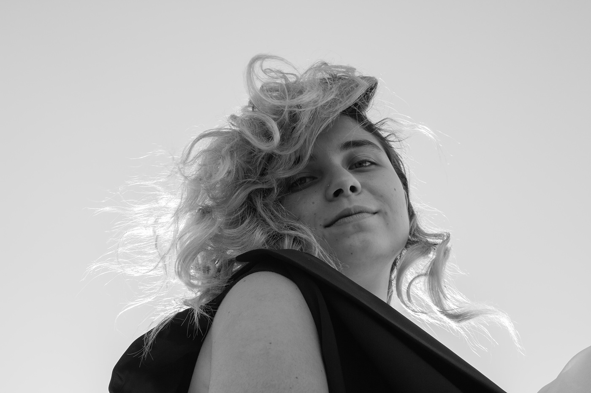

Aspirante à Desinger, fotógrafa e talvez front-end developer
{Meus projetos}

Fotografias realizadas durante a displina de
fotografia contemporânea. Ensaio inspirado na
fotografia de Lilian Bassman.
Por Adriana Cardozo, Marina Ramos e Pamela Candido.
Fotografias realizadas durante a oficina Fotografia
e Expressão, produzida pela Jacaré modas e Cena BXD.
Parte da construção
da minha identidade fotográfica.
Amamos café, somos descolados e temos a ousada missão de ensinar
sobre Café Especial e levar café de qualidade para as xícaras e canecas de todo Brasil.
Pamela Silva é graduanda em comunicação visual design na EBA/UFRJ. Técnica em roteiro para mídias digitais, em Educação/ CJLL,
tem grandes interesses por design e cinema. O interesse pela sétima arte Núcleo Avançado no foi reforçado pelo seu período de trabalho na ONG Cinema Nosso,
que explora o cinema para além de seu viés artístico. Utilizava-o como ferramenta de aprendizado, estudo e manifestação social. O design lhe deu a possibilidade de ir além dos planos, ângulos e movimentos de câmera, pensar nas cores, fotografia, cenário, cartaz e como tudo isso culmina num filme bem feito. Apresentou a beleza dos editoriais e a complexidade do webdesign. Paralelo ao trabalho e estudos, colabora na comunicação de sua igreja, que envolve desde artes para promoção de eventos a edição de vídeos.